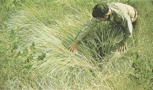
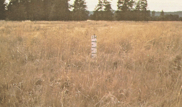
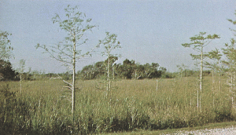

|
|
Fire Behavior Fuel Model 3 -- Tall Grass |
Anderson (1982) classifies Fire Behavior Fuel Model 3 in the Grass Fuel Type and describes it as follows:
Fires in this fuel are the most intense of the grass group and display high rates of spread under the influence of wind. Wind may drive fire into the upper heights of the grass and across standing water. Stands are tall, averaging about 3 ft (1 m), but considerable variation may occur. Approximately one-third or more of the stand is considered dead or cured and maintains the fire. Wild or cultivated grains that have not been harvested can be considered similar to tall prairie and marshland grasses.
Anderson's (1982) photographs 6, 7, and 8 are examples of fuels fitting this model.
|  | Anderson (1982) Photo 6, Fire Behavior Fuel Model 3. Fountaingrass in Hawaii; note the dead component. |
|  | Anderson (1982) Photo 7, Fire Behavior Fuel Model 3. Meadow foxtail in Oregon prairie and meadowland. |
|  | Anderson (1982) Photo 8, Fire Behavior Fuel Model 3. Sawgrass "prairie" and "strands" in the Everglades National Park, Florida, USA. |